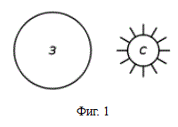
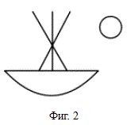
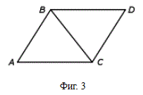

Беседа 2916 от 3877 · Беинса Дуно
Правилна преценка
Отче наш.
Имате ли зададена тема? – /Нямаме./
Пишете върху темата: „Кои неща спъват човека“.
Да разгледаме малко обстойно кое спъва човека да се храни. Колко неща има, които може да го спънат да яде? Или кое може да спъне човека да диша добре, или кое може да спъне човека да мисли добре, или кое може да спъне човека да ходи добре? Гледам, някои от вас ходите към тия схоластични заключения. Може ли частта да стане по-голяма от цялото? Или може ли цялото да стане по-малко от своята част? Може ли земята да стане по-голяма от слънцето или слънцето да стане по-малко от земята? Че може да стане, как да не може? Сега аз да ви го покажа (Фиг. 1).

Има някои неща, вас ви спъват. В дадения случай, когато се разисква един въпрос, който е от най-голяма важност и вас ви спъва. Ти седиш, нямаш обуща. Ученик си, разискваш някаква теория, математическа или геометрическа, но тебе в ума ти седят обущата, казваш: „Какво говориш, изстинаха ми краката, 25 градуса студ. Какво ми говориш за отвлечени работи, краката ми са студени.“ Питам: Защо си останал бос? Казва: „Обосях.“ – Защо си останал бос? Колко причини има човек да остане бос? Или казваш: „Аз останах без учение.“ Значи в ранната възраст не си учил, станал си на 50–60 години и дошло ти на ума да учиш. До 50–60 години си губил времето с празни работи, бил си земеделец, ходил си да ореш земята, впрягал си воловете, разпрягал си ги, ходил си на чешмата да ги поиш, връщал си се, давал си им храна. Какво си научил? За 60 години ти си впрегнал най-малко 4–5 хиляди пъти, 4–5 хиляди пъти си ги разпрегнал, 4–5 хиляди пъти си ги напсувал, казал си им някаква обидна дума. Как казвате, когато искате да обидите някого? Каква дума му казвате? Когато искате да кажете, че той не е културен, какво му казвате? След като си произнесъл тази дума, може ли да говориш за един философски въпрос?
Философски седи въпросът, че има предмети, има неща, които спъват човека. Ако биха ви изяснили една реалност. Представете си тогава, че имате една точка, да кажем точката C. Имате една ос, която (е) 250 милиона километра. Представете си, че тази точка се движи около друга точка, завърта се този радиус на 150 милиона километра, с такава бързина се завърта, че образува един кръг. Питам: Този кръг навсякъде има ли вещество? Мислено си представете, че има едно пространство без вещество. Съществува едно абсолютно пространство. Ако тази точка се движи в това пространство, този кръг навсякъде има ли вещество? Колко голям е този кръг? Този кръг е кръгът на движението. Тази точка толкова бързо се движи, че ние си я представяме, че е някаква земя. То е много малка точка, която се движи. Това е метафизика. Въпросът сега: Това разсъждение вярно ли е? – Въпрос. Така разсъждавате. Да допуснем, че вселената е безкрайна. Въпрос. Може да допуснем, че е много малка. Пак е въпрос, защото нито едното сме проверили, нито другото. Че е малка, ние заключаваме, че има малки частици, че е голяма, заключаваме от земята. Земята е голяма и по причина на земята мислим, че вселената е голяма. Вие понякой път седите и казвате: „Аз имам много голяма идея.“ Колко ви е голяма идеята? Ако идеята е голяма, как се събрала във вашата глава? Казвате: „Голяма идея.“ Как може да се събере в една малка стаица от 15 сантиметра широчина, 19 сантиметра дължина, имате и 16 сантиметра височина. Тази, голямата идея как може да се събере вътре? Тогава идеите, които имате вътре във вашата глава или са вън от вашата глава. Вие имате идея за слънцето. Слънцето във вашата глава ли е или е вън от вашата глава?

Запример, най-първо службата на езика е била да прекарва храната в стомаха. Затова е създаден езикът. След туй му дали втора служба, да проверява нещата, които влизат в устата горчиви ли са или сладки. След това, понеже извършва първата служба много добре, дали му втора служба. Най-после му дали и трета служба, да говори, да изказва разумни работи. Знам и един уд, който има три служби. Едното движение – устата се отваря и препраща храната в стомаха. След това опитва нещата. Най-после чрез езика изказвате вашата реч, разумното, чрез което хората имат едно мнение. Ако езикът ви говори добре, хората имат високо мнение заради вас. Ако не говори... Кой назначи езика на тия служби? Един човек, който вярва, ще каже, че Господ му дал тия служби. Но друг, който не вярва, казва: „Научно ми обяснете тия служби на езика.“ Как бихте обяснили на научно? Още не (е) обяснено, за в бъдеще.
Тогава се заражда друг един философски въпрос: Процесът на храносмилането предшествува ли мисълта? Най-първо процесът ли беше или мисълта първо съществуваше? Следствието ли образува причината или причината образува следствието? Има и друг въпрос, ако онази причина е следствие. Още не знаете коя е причината. Много пъти вземе една причина, пък тя е следствие на друга причина и т.н. Ако вие се наредите в една редица и ако крайния го бутнат и той бутне другия до него и така паднете всичките. 10–20 души се бутнете и паднете, кой за кого е причина да падне? Или някой път вие разисквате някой въпрос, скарате се. 10, 20 души вземете две страни, едните поддържат едното мнение, другите – другото мнение.
Сега вземете от астрологическо гледище, онези, което са родени в Овен, в първия дом на астрологията, какъв човек ще бъде? Първият дом е на движение, огнен дом. Дом на човешката мисъл, на човешката глава, на проявяването на човешкия живот. Белезите, които са ги турили, какви са качествата на онзи човек, който е роден на 22 март? Тогава влиза този знак. Един прави възражение на астрологията, че в една секунда се раждали хиляди хора. Двама астрономи взимат обикновената секунда, пък една обикновена секунда може да се раздели на милиони частици от времето. Следователно, никога двама хора не могат да се родят в една секунда. Светлината за една секунда е извървяла едно грамадно пространство на 300 хиляди километра. Ако триста хиляди души се родят в една секунда, един километър разстояние ще има един от друг. Ти гледаш отдалече, мислиш, че е в една секунда, малко пространство, тък то са триста хиляди километра събрани на едно място. Представете си една тънка жица, която, да допуснем, съставлява една хилядна от милиметъра. Сто хиляди километра от една такава жица колко пространство ще завземе? Всичките ваши идеи може да ги съберете в един лешник вътре. След като сте живели 70–80 години, всички ваши грандиозни идеи, които сте имали, от всички категории, в един малък лешник може да ги съберете. Казвате: „Докажи сега.“ Това е научно твърдение. Как ще ги събереш? И хората ги избягват. Има неща, които не може да се докажат. Защото, за да докажеш, трябва да приемеш. Реалното не може да се докаже. Ние приличаме на онзи цар, който искал да му кажат една приказка без край. Явявали се при него различни и като разправяли 2–3 седмици, година, преставали, уморявали се вече. С години се явявали и нито един не е могъл да каже една приказка без край. Иде един и казва: „Аз, царю, намерих и ще ти разкажа адна приказка без край. Имаше едно (време) един цар, който царуваше на цялата земя. Имаше засято голямо пространство, засято с жито, та направи един грамаден хамбар, построил го и напълнил с жито. Когато зидарите съграждали този хамбар, зидарите оставили една малка дупчица на едно място. Като напълнили хамбаря с жито, намерил се един щурец, който извадил едно зърно през дупката, занесъл го в своята дупка и пак се върнал да вземе друго зърно. Взел второ зърно, занесъл го.“ Казва: „Краят?“ – „Нека, казва, извади всичките зърна от хамбаря, че тогава ще ти кажа.“ Има неща, които не може да ги извадиш.
Някои искате да знаете, какъв ще бъде смисълът на вашия живот или краят на вашия живот. Ако вашият живот няма начало, какъв край ще има? Че вие сте минали като пътешественик, излезли сте от едно място, отивате на друго. Вие сте българин, отивате във Франция, слизате от парахода на френска земя, начало ли е на вашата българщина? Или, че сте дошли тук, на земята, мислите ли, че това е началото? Под думата „начало“ ние разбираме онзи момент, когато човешкото съзнание се пробужда за някаква идея. Началото на тази идея е: Запалвате свещта, започва тази свещ да функционира. Или започвате да свирите на пиано. То е началото на вашето свирене, но не е начало на всички хора, които свирят. Сега вие мислите, дали има бъдещ живот или не. Тази земя сега не се роди. С милиони и милиони същества са мислили върху същия въпрос. За някои е бил разрешен, за други не е бил разрешен. И за вас, за някои е разрешен, за други не е разрешен. Когато някой казва: „Има бъдещ живот“, друг казва: „Може да е тъй, може да не е тъй.“ То е вяра. Ти виждаш слънцето, ходил ли си на слънцето? – „Не съм бил, но го виждам. От слънцето излиза нещо, което иде при мене. На слънцето не съм бил, но приемам нещо от него.“ Сега оня свят се подразбира. Под думата „Божествен свят“ аз разбирам реалното. Онзи, съзнателният живот, той е онзи свят. Представете си, че вие разбирате закона на живота, седите тук. Но онзи човек, който изучава така живота, вие може да седите тук. Ако вие разбирате живота в неговата пълнота, вие няма да имате нужда от автомобили, от нищо, вие ще бъдете господар. Влизате тук на една лекция, не ви харесва, току изведнъж заминете, идете на друго място. Вие през прозореца навсякъде може да минете. Отдето искаш влизаш, излизаш. Ако ти е приятно, седиш, ако не ти е приятно, заминеш си. Човек, който сам си задоволява нуждите. Нямаш нужда от нищо. Не те (е) страх нито от глад, нито от сиромашия, всичко е на разположението ти. То е оня свят, Божественият свят, когато имаш всичко на разположение. Когато нямаш всичко на разположение, ти си в тоя свят. Докато сте в този свят, ще седите на мястото си, докато свърши учителят. За да влезеш и да излезеш, трябва да вземеш позволение. То е едно статическо положение.
Та казвам: Щом не може да разрешите един въпрос, вие сте в този свят. Щом го разрешавате, вие сте в онзи свят. Щом сте недоволен, вие сте в този свят, щом сте доволен, вие сте в онзи свят. Недоволството всякога подразбира неща, които не са разрешени. Едно разрешаваш, пък хиляди работи остават неразрешени. Сега, заключението кое е? Да има ли заключение? Врата да се заключи или да се отключи? И да се заключи, и да се отключи. Какво подразбирате вие, щом се заключи и се отключи вратата? Отключените врата показват, че някой живее вътре. Заключените врата показват, че никой не живее вътре. Отключените врата показват, че някой се е върнал, заключените – че някой си отишъл. Щом хората заминат някъде, заключат вратата, щом се върнат, отключват. Тогава всеки един момент вратата ту се отваря, ту се затваря. Тогава щом се отваря, за всяко отваряне има две разрешения: или влиза, или излиза. Отваря се вратата. Какво трябва да разбирате? Или влиза, или излиза някой от вратата. Като влиза, какво се разрешава? Този човек, който влиза в къщи, значи иде от работа, иде да си почине. Този, след като си почивал, отива на някаква работа. Човек в себе си живее в една къща, в която постоянно излиза и влиза. Някой път, щом ти е тягостно, връщаш се в себе си, и започваш да мислиш. Някой път става ти тъжно. Какво показва вашата тъга? Казвам: Много сте работили, усещате ръцете уморени. Ръцете болят, краката болят от работа. Вие го казвате „ревматизъм“. Вие сте се разболели, пръстите ви болят, рамената, лактите ви болят. Целият ден сте дигали мотиката. Вие ще викате лекар да констатира каква е болестта. Ревматизъм на нервна почва. Никакъв ревматизъм, никаква нервна почва. Много сте работили. Тогава като лекар предписвам: по-малко работа. 16 часа работа е много. Казвам: Десет часа. След като си работил десет часа, пак е много, боли ви пак. Работили сте девет часа, пак имате болки, много е работата. Като намаля на три часа, болката изчезна.
Сега да обоснова нещата приблизително. Ти седиш и си недоволен. Защо? – Защото обущата ти не са лачени. Недоволен си, защото обущата не са лачени и обущарят не ги е направил по модата, не са заострени, тъпи са. Освен, че не са лачени, не са скроени по модата, но виждаш, че не са направени хубаво, не са скроени добре и виждаш още, че не са боядисани, не светят нещо. Седиш и си недоволен от обущата. Казваш: „Откъде се намериха тези обуща, не ми мязат. На какво мязам с тях?“ Ако искаш, изуй си обущата, ходи със своите красиви обуща, които имаш. Защо да не ходиш бос? Изуй обущата си! Но казваш: „Другите, и те не са модни.“
Питам сега: Какво разбиране има? Много хубаво, нося ви едни обуща, направени от най-хубавата кожа, мекички, прилепнали на крака, заострени. Казвам: Дайте ми вашите обуща. Вземам обущата ви, давам ви нови. Веднага вие сте доволен. В какво седи доволството? Кожата е мека, обущата са каквито вие искате. След една година скъсаха се обущата, какво ще кажете? Ами сега? Де е онзи господин, който може да направи хубави обуща? Той вече е заминал. Какво ще правите вие, като скъсате обущата? – Обущата не трябва да се късат. От тези разсъждения искам да извадите едно заключение. Една млада сестра ми казва: „Боли ме кракът.“ Казвам: Много си работила, работи по-малко. Какъв е церът? – Церът е почивката. Щом те боли, работи по-малко. Ето какво разбирам по думата „работя“. Всяко действие, в което взима участие вашият ум, взима участие вашето сърце, взима участие вашата воля и това действие ви е приятно, тази е хубавата работа, която носи здраве. Всяко действие, в което вашият ум не взима участие, каквото и да е то, вашето сърце не взема участие и вашата воля не взема участие, то е болезнено състояние, образуват се болестите в света. Това е от моето гледище. Умът, сърцето и волята създават всичките болести в света. Щом умът е недоволен, създава се главоболие. Щом стомахът е недоволен, създава се коремоболие. Щом ръцете са недоволни, създават се болести в ръцете. Щом пръстите са недоволни, създава се болест в пръстите. Всички тия частици са живи, в тях има съзнание. Човек е сбор от разумни същества. И ако ръката ме боли, ръката неразумно направила нещо. Тия, които живеят в ръката, не мислят както трябва. Караница трябва, затова има болест. Следователно, трябва да ги примириш, какво искат някой път. Някой път искат масло, зехтин да ги намажеш, после топъл компрес, жадни са, вода им трябва. Отгоре ще ги стоплиш. На тия клетки на ръцете им липсва нещо. Всичките болести показват, че организмът на дадено място, клетките се нуждаят от храна. Докато вие нямате туй, идейното схващане, не може да разберете болестите. Тъй както сега разглеждате болестите, това е обикновените хора, може те така да схващат. Заболи го главата. Причината за главоболието е в стомаха. Заболи те коремът. Причината за коремоболието е горе в главата. Поляризиране става. Има отражение. Болестите идат по закона на отражението. Забележете, някой път те заболи някъде. Ако дойде друга, по-голяма болест на друго място, тази малка болест изчезва. Ако дойде от нея друга, по-голяма, и втората изчезва. Значи, всяка една болест на какво се дължи? Има някакво препятствие в организма. В хипнотично състояние, ако човека турят в магнетичен сън и ако му внушите, че ръката е изгоряла, може да се образува мехур. Ако му внушите, че на ръката има огън, като стане, на ръката ще има мехур. Вие понякой път сте недоволни, а вашето недоволство от какво зависи? Вас ви турят в магнетичен сън и ви внушават, че вас ви трябват пари. Или ви внушат някаква идея, че имате болест, или че ви трябва голяма къща от три, четири апартамента, за да се осигурите. Те са чужди идеи. Вие, да кажем, искате да имате стая. То не е ваша идея. Искате да имате хубави дрехи, то не е ваша идея. Искате да бъдете красив, то не е ваша идея. Искате да бъдете силен, то не е ваша идея. Това са чужди идеи. Предствете си, че една пеперуда иска да бъде като човек. Може ли да стане? Или пък вие в дадения случай може ли да станете като пеперудата? Не може. Вие в дадения случай не можете да станете това, което искате, понеже в дадения случай вие сте това, което трябва да сте. В дадения момент не можете да бъдете (друго). Вие искате да бъдете това, което може би след милиони години ще бъдете, вие искате днес да бъдете. То е невъзможно. То върви в този Божествен закон. Вие трябва да чакате. Детето, като се роди, не може да стане възрастен човек, на 2 години да израсте. Тогава във вас влиза една идея, преждевременно раждате една идея, вие раждате преждевременно едно чувство. Вие раждате преждевременно едно чувство, вие раждате преждевременно една постъпка. Тия постъпки са хилави, тия идеи са хилави. Вие се тревожите като ония майки, които са родили децата си недоразвити, че нито се развива, нито умира. Ангажира се майката цял ден с това дете, което няма никакво бъдеще.
Казвам: Една идея във вас, която не носи светлина, една идея във вас, която не носи топлина, каква идея е тя? Тя е един инвалид. Инвалидни идеи има. Идеи, които ви правят да сте недоволни, какъв баща и каква майка сте. Гледам някой път вие сте недоволни. Значи, имаш едно дете инвалид.
Сега вие всинца казвате, че много знаете. Хубаво, вие казвате, аз толкова години съм ви говорил, кажете ми теоретически, като знаете, на какво може да разчитате? Аз, запример, имам една идея, една моя идея, когато съм най-неразположен, като я погледна, всичкото неразположение изчезне. Имам си едно (желание), което седи. Когато съм неразположен, като го видя туй желание, всичкото неразположение изчезне. Имам друга една стая, дето имам една красива постъпка. Като отворя тази стая и погледна постъпката, тогава забравя всички лоши постъпки. Всичко се реформира. Тази хубава постъпка каквото и да направя, тя го туря на място. Запример, ако дадеш една линия на един обикновен човек, той нищо няма да направи от нея, но ако я дадеш на един художник, той ще изкара една хубава картина. Той ще я тури на място. Какво може да направите от един ъгъл, ако ви се даде? Някои седят, говорят им духовете. Какво говорят духовете? – Духовете говорят: „Ти пълната чаша изпразни, празната напълни.“ Преведете сега. Имаш едно желание, постигни го, не го оставяй напразно. Недоволството произтича от две неща: Или чашата ти е пълна, или е празна. Искаш да пиеш, пък няма какво да пиеш. Недоволството произтича, ти или трябва да напълниш, или трябва да я изпразниш. Защото ако чашата не се напълни, не може да започне процесът. Да напълниш една чаша, значи да мислиш, да започне един процес на движение, трябва да имаш съзнание, че вършиш нещо в дадения случай. Да изпразниш чашата, тази мисъл трябва да излезе, да започне да расте. Когато мисълта излиза извън човека, то е закон на растене. Като влиза мисълта, то е посяване, вътре в твоя мозък се посява. Когато тая мисъл започваш да я предаваш, то е растене и ти се радваш. Който човек и да е, щом една идея излезе от тебе и влезе в тебе, ти ще видиш накъде тази идея е израсла. Стига тази идея да даде плод и от този плод ти ще се ползуваш. Реални неща са тия, от които ние можем да се ползуваме. То са сенки на живота. Мисъл, от която се ползуваш, е реална, чувство, от което се ползуваш, е реално, постъпка, от която се ползуваш, е реална. Да имате едно определение. Тази идея при всичките условия трябва да ви помага. Вие може да сте затворен в затвора, присъствува ли тая мисъл, вие сте герой. Вие може да сте на кладата, да ви горят, но вашето идейно чувство присъствува ли, за вас страданията са нищо. Може да ви изгорят, вие с радост заминавате. Или, да кажем, вие може да сте изгубили много в живота, може да сте изгубили с милиони, но постъпката ви е добра, като погледнете на добрата постъпка, не съжалявате. Всяка постъпка, която вие сте направили, струва повече от милионите, които сте изгубили. Следователно, всяко добро струва повече от милионите, които сте изгубили. Следователно, всяко добро струва повече. Една добра мисъл струва повече от цялата земя, с всичките богатства, с всичките хора, повече струва от всички тях. Едно хубаво чувство и по същия закон струва повече. И една добра постъпка, и тя седи по-горе. То е идейното. То е идейният морал. Вие сте болен. Погледнете на вашите идеи и болестта ви ще изчезне. Вие сте болен, погледнете на вашето добро чувство и болестта ви ще изчезне. Всичко ще изчезне.
Та постъпките регулират физическото тяло, чувствата регулират топлината на тялото, а пък мисълта регулира светлината. Колко неща турихме? – Три: Чувства, мисли и постъпки. Мисълта регулира светлината, чувствата регулират топлината. Значи вие на земята се нуждаете от топлина. Следователно, трябва да имате хубави чувства. Добрите чувства раждат тази хубавата топлина, при която организмът расте. Отличните мисли раждат светлината. От тази светлина вие имате нужда. Аз говоря за вътрешната светлина. Отвън Слънцето грее, във вас е тъмно, ходите, недоволен сте. Когато дойде вътрешната светлина, тя носи живота.
Сега ще ви дам едно правило. Казвате: „Как да стана доволен?“ Да ви обясня. Представете си зимно време седите в стаята. Нямате дърва, нямате нищо. Казвате: „Когато ми е студено, как да бъда доволен?“ Давам ви дърва, давам ви кибрит, давам ви борина, казвам: Турете ги на огнището, ще имате топлина. Ти казваш: „Сериозно ли говориш, тия дърва горят ли, кибритът може да загасне.“ Казвам: Драсни, ще видиш сега. Ти направи опита, че тогава разсъждавай. Седят някои и казват: „Хубаво е да идеш в оня свят.“ Трябва да живееш хиляди години. Какво от това? – Ти не си ходил в оня свят, то е предположение. Ти не знаеш какъв е оня свят, един свят на противоречие. То е един процес, в който всичките мисли, желания се реализират. Безконечните мисли, безконечните желания, безконечните постъпки за човека се реализират постепенно. Трябва да живеете десет вечности. Всяка една вечност е единица с 30 нули. Като живееш, като преживееш, тогава ще разсъждаваш. Като прекарате тия 30 нули, туй време да знаете, да имате ясна представа какво представя единица с 30 нули. Той мисли, че бил в оня свят. Казва: „Какво от това, че си видял един ангел?“ Ти така може да говориш за това, което никога не си видял, но ти като видиш един ангел, няма да говориш така. Ти като видиш един ангел, всичкото недоволство, което имаш, ще изчезне, ти ще го забравиш, ще мислиш, ще чувствуваш, ти човек ще станеш. Ако едно говедо види един ангел, то ще престане да е говедо. Опашката, козината, рогата ще паднат и говедото няма да (е) вече говедо. Опашката, козината, рогата ще паднат и говедото няма да е вече говедо, ще се измени. Да видиш един ангел, значи да придобиеш своята свобода. Чудни са хората. Един човек, който видял Бога, той придобива своята свобода, той добива знание, ум, който се огрява от светлина, има сърце, което се огрява от любовта, той вече има този, безсмъртния живот в себе си. Той умрял, казва, че видял Господа. Ти си видял един Господ, от който хората умират. Ти не си видял онзи Господ, при Който хората възкръсват и оживяват.
Казвам заключението: Ако като свърша беседата, вие си останете такива, каквито сте сега, нищо не сте разбрали, не сте видели ангела. Ако сърцето ви не гори, любовта е далеч от вас. Ако умът не мисли, мисълта, светлината е далеч от вас. Ако не може да постъпите добре, добрите постъпки са далеч от вас. Ако вие не може да се справите с вашата сиромашия, ако не можете да се справите с вашето богатство, ако не можете да се справите с вашите недоразумения, вие не сте хора. Човек е същество, което може да се справи със своите мисли, което може да се справи със своите чувства, което може да се справи със своите постъпки. Това е човекът. Всеки, който не може да се справи, той не може да носи името „човек“. Всеки един, който може да разрешава трудните задачи, той е учен човек, който не разрешава нито една задача, никакъв ученик не е.
Това са вече заключения, философски заключения. Ако аз бях на вашето място, бих турил въпроса така: „Тъй е лесно, но влез в нашето положение.“ Какво е вашето положение? Един от вас да излезе да каже какво е вашето положение. Един от най-недоволните от вас да каже какво е неговото положение. В дадения случай, бихте ли заменили вашето състояние с друго някое състояние? Да кажем: Вие бихте ли заменили вашето състояние със състоянието на един цар, който управлява една голяма държава, заповядва навсякъде? Мислите ли туй състояние на царя ще бъде по-добро от сегашното ваше състояние? Този цар е изложен на хиляди лъжливи слухове, има неприятели, които искат да го убиват. Ще издаде сто подписа да се екзекутират някои неприятели. Питам: Какъв е този царски живот да подписва за сто души да се екзекутират? Тогава, какво ще придобие при туй положение? Ако станете цар и придобиете живота на всичките хора, ако те благоденствуват, разбирам, но ако станете цар, за да измъчвате толкова хора, какъв цар сте тогава? Най-после, защо измъчвате себе си? Защо подписвате тия присъди в себе си? Както виждам, всички бесилки имате, затвори имате, като минавам, гледам увиснали. Казвате: „Този е един заговорник.“ Отде знаете, че една ваша мисъл е лоша? Кои са доказателствата? Отде знаете, че едно ваше чувство е лошо или че една ваша постъпка е лоша? Ако аз разтривам един болен човек, той ще каже: „Измъчи ме с това разтриване.“ След един, два дена или след една неделя той се чувствува добре. В дадения случай той има една крива идея. Нему не му е приятно, понеже неговият организъм се намира в едно статическо положение, не може да се приспособи с новите трептения, които влизат в тялото, той чувствува болка. Ако някой каже една дума, от която сме недоволни, лошата дума е тази, която произвожда лоши резултати след време. Колко време се изисква, за да се покаже една мисъл, че е добра или не? Как мислите вие, колко време се изисква? Има едно естествено време. Колко време се изисква да се изпее една цяла нота? Има естествено време. /Учителят тактува на 2⁄4 и после на 4⁄4./ Естествено ли е туй даване на такт? Естествено ли е туй движение? /Учителят имитира движението на пияния./ В него има прекъсвания, дисхармония. В другите движения има един ритъм, който е естествен. Българите имат един особен ритъм. Така не се разрешава въпросът, има прекъсване. Хубаво, но трябва да се свърши. Как ще го свършите вие? Как бихте го разрешили? Българите свещено вярват, казват: „Да предадем народната музика такава, каквато е.“ То е едно статическо положение. От толкоз хиляди години българите пеят по един и същ начин, както детето пее, така пее на 80 години. Музиката трябва да има един замах. Когато пеете, някои тонове показват, че на физическото поле има дисхармония, други показват, че на ума нещо не достига. Трябва да имаш една хубава мисъл и едно хубаво чувство, една хубава постъпка, за да изкажеш тоновете. Много учители казват на своите ученици: „Ти нищо не разбираш.“ Но учителят, и той нищо не разбира. 2х2 е 4, при какви условия? Две камъчета на две места правят 4. На две места по два вола правят четири вола. На две места по две къщи правят четири къщи. На две места по две жени правят четири. Четирите какво е? – То е мярка, с която можеш да разрешиш една задача. С четири разрешаваш въпроса. A и B, това са две личности (Фиг. 3). Двама съдружници искат да работят.

И домът е основан на същия закон – квадрата. AB е бащата и майката, C е детето. Ако на детето не му дадете едно възпитание, вторият триъгълник е туй дете. Ако туй дете – капиталът – се развива, бащата и майката са доволни. Ако туй дете няма условия да се развива, ако е хилаво, значи този капитал не се е развил. Всяка една идея в нас, която не се развива, тя е хилава. Всяко едно чувство в нас, което не се развива, то е хилаво. Всяка идея, която не се развива, е хилава. Всяка постъпка, която не се развива, е хилава. Оставете стария морал. Казвам: Морал е туй, когато нещата се развиват. Всяка идея може да се реализира, всяка постъпка може да се реализира, да даде плод. Всяко чувство може да се реализира, да даде плод. Те са елементарни работи. Към туй трябва да се стремите. Казвате: „Да бъдем добри.“ Но добротата е капитал, турен на работа. Вие, за да познаете колко сте добри, спрете се при един беден човек, за да видите имате ли силна мисъл, спрете се при един беден просяк, когото всички заминават, че никой нищо не му туря в паничката. Спрете се отдалеч и вижте вашата мисъл, вашите чувства, вашите постъпки колко са силни. Турете му десет лева в паничката и пожелайте всички, които минават да турят. Постойте половин час да видите, ще турят ли. Ако започнат да турят, вашата мисъл е силна, ако минават и заминават, вашата мисъл е слаба. Може да стоите 10–15 минути, минава някой, тури 5 лева, то е пак нещо. Сто лева не е турил. Някъде ти туриш един лев, онзи, който минава туря сто лева, мисълта ви е силна.
Сега вие как мислите, че светът ще се оправи? Казвате: „Аз нямам нищо.“ Как нямате нищо? Много скържави хора сте. Дойде някой беден човек при вас, не му казвай колко ще му дадеш, но му кажи: „Ще се оправи работата. Ако не се оправи, ела при мене пак.“ Дойде втори път, трети път, работата не се оправя. Какво трябва да направите, за да се оправят работите? Един българин, той беше учител, иска да иде в Америка, но му дохожда наум да иде във Франция да изучи френски език, да седи една година във Франция, че тогава да иде в Америка да си изкара прехраната. Отива в Париж, но за да не си изхарчи парите, иска да намери някоя работа. Намира в една евангелска църква на един голям орган, той държи, надува меха, когато органистът свири. Тук този господин бил учител в гимназията. Една вечер като дига ръчката, започнал да разсъждава за положението си и забравил да дига ръчката. Един сбутал го. И вие понякой път като този българин държите ръчката, казвате си: „Какво замязах тук?“ Ако не дигаш и не слагаш тази ръчка, не може да свири органистът. Ти си този човек, който даваш възможност на органистът да свири. Ако престане тази ръчка да се движи, органистът не може да свири. В дадения случай не считай, че тази ръчка е безполезна. Казваш: „На какво съм замязал?“ Ако ръчката на органа не можеш да буташ, каква друга работа можеш да вършиш? Ти трябва да имаш своята опитност. Седнал си да мислиш какво си бил в България. Забрави какво си бил в България, органът трябва да свири, трябва да научиш френски за една година, че като идеш в Америка да преподаваш френски, да си изкараш прехраната, да придобиеш познания, да бъдеш полезен на хората. Седнал си да мислиш, че ако имаш пари на този хал ли щеше да бъдеш сега, да имаш тази участ, те да слушат, а аз да въртя ръчката. Честолюбието ти е засегнато. Той се казва Цеко Грънчарски. Този човек, който мислеше, че е цял философ, сполетя го едно нещастие, падна от третия етаж, дето пътуват автомобилите, падна с багажа си, натъртиха му се ребрата, но той остана жив.
Имайте по една светла мисъл, на която като погледнете, да се измени вашето състояние. Дръжте идеята, че сте дошли за нещо хубаво в света. Макар и да го не виждате, макар и да държите ръчката на органа, не се обезсърчавайте. Слушайте дали свири органът, като свири, да ви е приятно. Слушайте музиката. Ти като въртиш ръчката, слушай музиката. Всинца вие сте хванали по една ръчка, във Франция сте и всички държите по една ръчка, органистът свири. Ако започнете да мислите защо сте дошли тук, тъй ли трябваше да бъде животът ми, ще ви сбутат. Казват: „Във Франция искат органът да свири.“ Та ние сме дошли до положението, че каквото и да мислим, трябва да свършим една работа, при каквито и да е условия. Условията не са лоши. Вашите условия са хиляди и хиляди пъти по-добри от условията на животните. Вашите сегашни условия са хиляди пъти по-добри, отколкото на ония хора, които са живели преди хиляди години. При тия условия, които имате, вие казвате: „Много неблагоприятни са условията.“ Не е вярно. В този живот най-хубавото, което може да ви се даде, природата ви го дала. В дадения случай, най-хубавото ви е дадено. За бъдеще има предвид да ви даде повече. Зависи от туй положение как ще вършите работата. Вашето бъдеще, дали повече или по-малко да ви се даде, ще зависи от сегашното състояние на живота ви, както вие мислите. Вие понякой път се чудите. Когато се намирате в най-хубавото положение, представете си, че не сте вие, друг е на вашето място. Представете си, че давате съвет на себе си отвън. Какво трябва да кажеш: „Обуща нямаш, стаята не е на място, прозорец малко тесен, одеялата тънки, отвън студено, дрехите не са както трябва, шапката не е на място.“ Какво трябва да правиш? Кажи си: „Това са най-хубавите обуща, които досега съм носил. Такива обуща досега не съм носил.“ Като погледнеш дрехите си, кажи: „Като тия дрехи не съм носил и такава шапка не съм носил“. Повярвай в туй, което си казал. Като погледнеш стаята, кажи: „Тази е най-хубавата стая, в която съм живял.“ В какво седи хубостта? Аз отивам при един извор да пия. Не е количеството на водата, което ще определи, каква е водата.
Електротехниците имат волтаж, ампераж и после фреквенция. Какво означава амперажът? Амперажът означава количеството, а волтажът, това е силата, с която в дадения случай се проявява. Ами фреквенцията? – Промените, които стават от единия полюс в другия, смените, които стават. Но електротехниците знаят как да сменят известно количество. Ако не знаеш какво е количеството, после силата на тази вода, ти няма да можеш да я туриш на работа. Ако вие тази, голямата вода, я прекарате през една градина, тя ще изрови градината. Ако прекарате малко количество, нищо няма да полее, градината ще остане суха. Значи, в дадения случай онова, което имате вие, трябва да регулирате вашия волтаж и вашия ампераж. Понякой път викайте някой техник да ви помогне. Може да попитате някой от нашите братя, които разбират, да ви дадат практически указания за волтажа и ампеража, как да ги нагласиш, за да светнат лампите. Ако не се нагласят, не може да се образува светлина. В даден случай един човек, който може да разреши една малка задача, е умен. Казвам: Умът има ампераж, умът има и волтаж. Сърцето има и волтаж, сърцето има ампераж. И волята има и волтаж, и ампераж. Имате три волтажа, три ампеража и три фреквенции. Всички тия трябва да ги регулирате. Да регулирате ампеража, волтажа на ума си, да регулирате ампеража и волтажа на сърцето си и после да регулирате ампеража и волтажа на волята си. Една сложна работа. Един техник знае през кои жици да прекара тока. Ако размени жиците, веднага токът се обърква.
Основната мисъл да остане. Не подценявайте в себе си онази велика мисъл, която Бог е вложил във вас. Не подценявайте ония добри чувства, които Бог е вложил във вас. Не подценявайте и добрите постъпки, които Бог е вложил във вас. Имайте добри постъпки. Човек интуитивно трябва да схваща как трябва да постъпва, как трябва да чувствува, как трябва да мисли. Има една мярка. Значи, ако намерим онази мярка, това наричаме Божественото. Разчитайте в себе си на Божественото, не го потъпквайте! Всичката погрешка е там, че вие искате да заровите Божественото, вие искате да го направите слуга. Вие ще му слугувате, то ще ви направи свободни, то ще ви бъде капитан. Вие седите и казвате: „В мен няма нищо Божествено.“ Щом няма Божествено, нищо не можеш да постигнеш. Щом имаш Божествено, всичко можеш да постигнеш. Имате Божествено, само че вие не вярвате в Него. Трябва да се научите да повярвате. Ако във вас няма Божествено, човек е осъден на смърт. Пък ако има Божествено, човек има прогрес. Божественото навсякъде, при всички условия в живота може да се справи и в света, и в ада при най-лошите условия Божественото разрешава всичките мъчнотии. Няма мъчнотия, която Божественото вътре в тебе да не разреши. Ще чакаш То да ти намери начин, по който да го разрешиш. Направи опита, не чакай То да работи за тебе, а ти да ядеш и да пиеш. Ни най-малко не мисли така.
Един млад момък имал слабост, обичал да краде кърпички от младите моми. Много пъти го затваряли и видял, че колкото пъти открадвал, не му вървяло. Колкото пъти открадне или затвор, или глоба ще има. Съвсем оголял. Един ден върви по пътя, намира една кърпичка, паднала на една мома. Отива, че занася кърпичката на момата. Тя го попитала за адреса и в него ден като дал кърпичката, него го назначили на служба. Той трябваше да дигне кърпичката, да я даде на момата, значи не се зародило желание да я тури в джоба си, да я продаде и да вземе пари.
Ако една Божествена идея не я продадеш, не я туриш в джоба си, само тогава ще те назначат на служба. Казвам: Подигнете Божественото във вас и не бъдете мърморковци.
Ето какво подразбирам под думата „добър човек“? – Когато човек мисли правилно, ако е стар, на 85 години, право като мисли, той ще се подмлади, ще стане на 25 години. Той е мислил добре. Ако не мисли добре, ще си остане на 85 години.
Само светлият път на Мъдростта води към Истината.
В Истината е скрит животът!
XVIII година.
4 лекция на Младежкия окултен клас,
държана от Учителя на 28 октомври 1938 г., петък, 5 ч. с.
София – Изгрев.
Бележка /от координатора Вергилий Кръстев/: На 4 ноември 1938 г. по каталога на Елена Андреева няма лекция.